Build a VPN from scratch
项目要求
- 通信用户可以通过界面进行基本的配置
- 可以设定加解密模式
- 数据实现机密性和完整性保护
- 实现对IP数据包负载基本的加密和认证
项目结果请见效果演示.
实验环境配置
本次实验环境为
Win10虚拟机 OS: Ubuntu-22.04.3-desktop-amd64
Wireshark抓包工具
为了调试方便, 建议安装终端分屏软件terminator. 本次实验语言选择为python. 原计划使用C++, 但因为系统版本过高, 编译产生exe文件所需的GLIBC_2.34在image系统中缺失. 如果计划使用C++编程, 请安装Ubuntu 20.04.😢😢
前置知识
需要对基于TUN实现的VPN技术有所了解. 简单掌握docker compose, TSL, PyQt5.
这里提供一些学习资源.
VPN原理 : OpenVPN Building and Integrating Virtual Private Networks Chapter 1-2.
TUN编程: Computer Internet Security A Hands-on Approach Chapter 19.
TLS: Computer Internet Security A Hands-on Approach Chapter 25.
Docker Tutorial: Docker.
PyQt5: PyQt5 Tutorial, techwithtim.
Python子进程控制：python101.com .
网络环境配置
实验环境的配置
我们使用docker-compose模拟网络环境,这比虚拟机模拟方便的多. 拟使用网络拓扑如图所示.
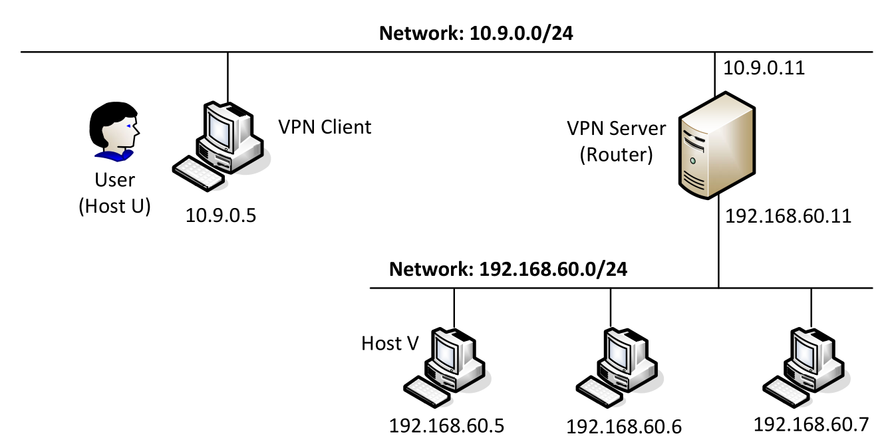
In practice, the VPN client and VPN server are connected via the Internet. For the sake of simplicity, we directly connect these two machines to the same LAN in this lab, i.e., this LAN simulates the Internet. We will use the “NAT Network” adaptor for this LAN. The third machine, Host V, is a computer inside the private network. Users on Host U (outside of the private network) want to communicate with Host V via the VPN tunnel.
文件docker-compose.yml中已经对网络环境进行了设置. 我们先新建文件夹VPN, 在其中新建文件夹volumes. 将docker-compose.yml复制到VPN中, 打开终端执行命令行
1 | docker-compose up |
后出现
1 | hexufan@hexufan-virtual-machine:~$ cd VPN |
即可实现环境搭建. 注意, 实验过程中该终端陷入阻塞. 后续新建终端窗口执行命令即可. 接下来我们对环境进行检验.
- Host U 可与服务器通信
如下命令行可以让我们进入容器. 在当前终端输入命令, 由容器执行.
1 | docker exec -it <id> /bin/bash |
其中<id>为容器编号, 可以通过
1 | docker ps --format "{{.ID}} {{.Names}}" |
查看. 我们进入VPN Client对应容器. 执行docker ps --format "{{.ID}} {{.Names}}"结果如下.
1 | ec150482e082 client-10.9.0.5 |
执行docker exec -it ec /bin/bash我们进入客户端容器. 其中
1 | root@ec150482e082:/# |
执行ping -c 3 10.9.0.11, 这是在测试是否能够与10.9.0.11主机通信. 结果应为
1 | root@ec150482e082:/# ping -c 3 10.9.0.11 |
VPN Server 可与 Host V 通信
如前所述, 进入Server容器, 测试是否联通即可. 此处不再赘述. 这里提供退出容器的命令.
1
exit
Host U 与 Host V 不可通信
结果应为
1
2
3
4
5root@ec150482e082:/# ping -c 3 192.168.60.5
PING 192.168.60.5 (192.168.60.5) 56(84) bytes of data.
--- 192.168.60.5 ping statistics ---
3 packets transmitted, 0 received, 100% packet loss, time 2047ms在虚拟机中使用Wireshark能够实现抓包
我们随意进入容器,
ping的同时观察是否能够抓包即可. 下图时在Host U 上执行ping -c 3 10.9.0.11抓包结果.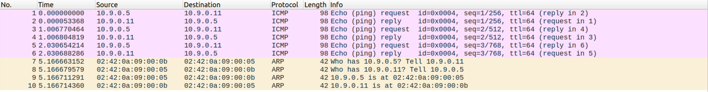
此处可能遇到若干问题. 列举如下, 供参考.
Wireshark 没有对应interface的捕获权限.
在命令行中执行
sudo wireshark启动即可.嗅探那些接口？
据笔者观察, docker建立的网络均以br-开头, 容器为veth-. 我们只需在Wireshark主界面按住
ctrl逐个选中抓包即可.
Docker网络的关闭
请注意, 有时由于程序调整我们需要重启docker网络, 或者我们关机退出. 请务必关闭网络, 否则会带来不必要的麻烦. 操作命令如下.
1 | # 关闭全部容器 |
最后一个命令请谨慎使用, 他会连同image一起删除. 重启网络时需要重新下载.
1 | docker stop $(docker ps -aq) && docker rm $(docker ps -aq) |
由于各种原因, 某些进程可能没有结束我们就已经关闭终端了. 存活的进程会占用IP等等资源, 重新启动程序时会出现错误.
解决方法如下.
1 | # 查看在运行进程id |
有时会出现结束进程后仍然报错资源被占用, 只需稍等片刻再做尝试即可.
注意事项
代码迁移
我们使用虚拟机, 有时会将Windows下编写的代码文件放在Linux环境下运行. 这时会遇到如下错误.
1 | /usr/bin/env: ‘python3\r’: No such file or directory |
系统提示我们镜像当中不存在python, 这显然是不对的. 出现这个问题的原因如下.
The problem are your line ending characters. Your file was created or edited on a Windows system and uses Windows/DOS-style line endings (CR+LF), whereas Linux systems like Ubuntu require Unix-style line endings (LF).
There is a simple tool that can convert the two different styles for you called
dos2unix.Install it by running
After that, you can convert files in either direction using one of the commands
2
>unix2dos /PATH/TO/YOUR/LINUX_FILEExample:
2
3
4
5
6
7
8
9
10
print("ok")
$ ./test.py
/usr/bin/env: ‘python3\r’: No such file or directory
$ dos2unix test.py
dos2unix: converting file test.py to Unix format ...
$ ./test.py
ok
以上来自askubuntu.com. 为了避免这个问题, 我们最好直接在虚拟机中编写代码.
虚拟机网络问题
如果在虚拟机中科学上网时下载包、库等, 可能出现如下错误.
1 | hexufan@hexufan-virtual-machine:~$ pip install PyQt5 |
只需把VPN关掉, 并将虚拟机代理模式改为自动即可.
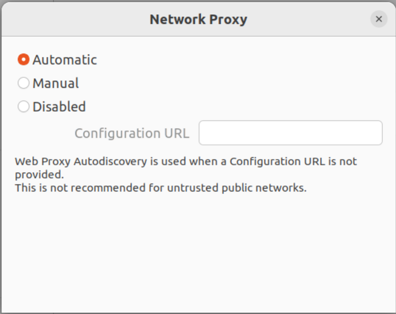
请注意, 重新设置后最好关掉原有终端重新下载.
简单VPN设置
我们逐步实现VPN的实现, 并对效果进行检验.
Step 1 设置客户端TUN接口
VPN的实现很大程度依赖于TUN接口, 我们能够借此实现对网络通信中直接到达系统内核的数据包的操作. 详见Computer Internet Security A Hands-on Approach Chapter 19, 后续会略作讲解.
之前我们在VPN下创建了volumes文件夹, 该文件夹在docker-compose的设定下已经挂载(mount)到所有容器的/volumes文件夹下. 我们将客户端、服务器所需用到的代码文件放在该文件夹中, 方便使用.
创建TUN
首先进入客户端容器.
1 | root@5885e0c8b2f0:/# |
我们创建TUN接口. 进入客户端运行文件vpnclient.py.
其中代码如下. 注意, 文件开头#!/usr/bin/env python3指定编译器, 不能删除.
1 | #!/usr/bin/env python3 |
会遇到操作权限的问题, 我们为所有用户添加执行文件权限, 而后执行.
1 | root@5885e0c8b2f0:/# cd volumes |
至此该终端阻塞. 我们新建终端, 进入容器, 可以通过ip address看到我们创建的TUN接口.
1 | hexufan@hexufan-virtual-machine:~/VPN$ docker exec -it 58 /bin/bash |
接下来我们分配IP地址给该接口, 并将其激活.
1 | root@5885e0c8b2f0:/# ip addr add 192.168.53.99/24 dev hexfantun0 |
再次查验, 可以看到不同.
1 | root@5885e0c8b2f0:/# ip address |
此后通信均要完成此操作, 于是我们将其写入代码. 注意, 需在while循环之前.
1 | os.system("ip addr add 192.168.53.99/24 dev {}".format(ifname)) |
从TUN读取数据
接下来我们测试TUN接口能否读写数据. 更改while循环中代码如下.
1 | while True: |
为了应用更改, 我们重新运行vpnclient.py. 请注意, 程序每次运行都会新建一个TUN接口. 稳妥起见, 我们删去原有接口后再重新运行.
1 | ip link delete hexfantun0 |
运行ip address检验是否删除.
1 | root@169e1b2c46f8:/# ip address |
Client与
192.168.53.0/24网段通信可以通信, 应当在运行
vpnclient.py的终端看到如下信息.1
2
3
4
5root@169e1b2c46f8:/volumes# vpnclient.py
Interface Name: hexfantun0
IP / ICMP 192.168.53.99 > 192.168.53.1 echo-request 0 / Raw
IP / ICMP 192.168.53.99 > 192.168.53.1 echo-request 0 / Raw
IP / ICMP 192.168.53.99 > 192.168.53.1 echo-request 0 / Raw这是因为系统自动将发送至该网段的数据包发往TUN接口.
Client与
192.160.60.0/24网段通信应为不通, 我们的VPN还没有设置完毕.
向TUN写入数据
更改代码如下.
1 | while True: |
上述代码检验收到的IP数据包. 若其中含有ping发出的ICMP包, 读取其中内容原路发回. 我们先重新运行程序. 一应操作如前.
1 | hexufan@hexufan-virtual-machine:~/VPN$ docker exec -it 16 /bin/bash //进入客户端容器 |
可以在vpnclient.py终端看到TUN收到和发出数据包.
1 | root@169e1b2c46f8:/volumes# vpnclient.py |
至此TUN已经检验完成.
Step 2 实现客户端与服务器间的Tunnel通信
我们已创建了客户端容器中的TUN接口, 通过在其上编程实现数据包的操作, 这已经在向TUN写入数据中有所体会. VPN的原理就是在这一步将数据包进行包装, 实现加密通信, 想必各位已不难理解. 下一步我们实现TUN接口与服务器的通信. 为了先行测试单向通信与否, 我们使用UDP.
单向通信
我们新建文件vpnserver.py, 这只是检验服务器是否收到数据.
1 | #!/usr/bin/env python3 |
除此之外, 我们还需要修改路由规则, 将发往192.168.60.0/24网段的数据包转给TUN接口. 这样后续我们就可以对这些数据进行处理.
1 | ip route add 192.168.60.0/24 dev hexfantun0 via 192.168.53.99 |
其意义为: 添加路由规则, 发往192.168.60.0/24网段的数据包转给设备hexfantun0, 由地址192.168.53.99发出. 可以将其添加到程序里自动化执行. 同样注意, 应在while循环之前.
1 | PN = "192.168.60.0/24" |
vpnclient.pywhile循环替换为如下代码, 将路由转到TUN接口的数据全部转发给10.9.0.11.
1 | sock = socket.socket(socket.AF_INET, socket.SOCK_DGRAM) |
我们分别在服务器、客户端容器运行对应程序. 尝试从客户端向服务器通信. 服务器可以收到信息.
1 | root@d17a2bd3d5f7:/volumes# vpnserver.py |
但是此时仅是单向连通.
1 | root@169e1b2c46f8:/# ping 192.168.60.11 -c 3 |
双向通信
连通子网主机Host V
需要注意的是, Linux系统默认不转发数据. 也就是说我们的服务器如果收到发往192.168.60.0/24中其余主机的数据包时会将其销毁. 所以我们需要执行如下指令.
1 | net.ipv4.ip_forward=1 |
不过我们的docker-compose.yml中已经做了设置, 因此我们不需要任何操作.
接下来我们设置服务器, 实现双向连通. 自然, 如同客户端一样需要设置TUN接口. 此处不再赘述, 给出代码. 它将收到的数据转发到子网中去.
1 | #!/usr/bin/env python3 |
分别启动程序, 我们在客户端容器中ping Host V 192.168.60.5. 结果如下.
1 | root@169e1b2c46f8:/# ping -c 3 192.168.60.5 |
服务器收到信息.
1 | Interface Name: servertun0 |
我们使用Wireshark查看数据包传输情况. 进入主页选中接口如下.
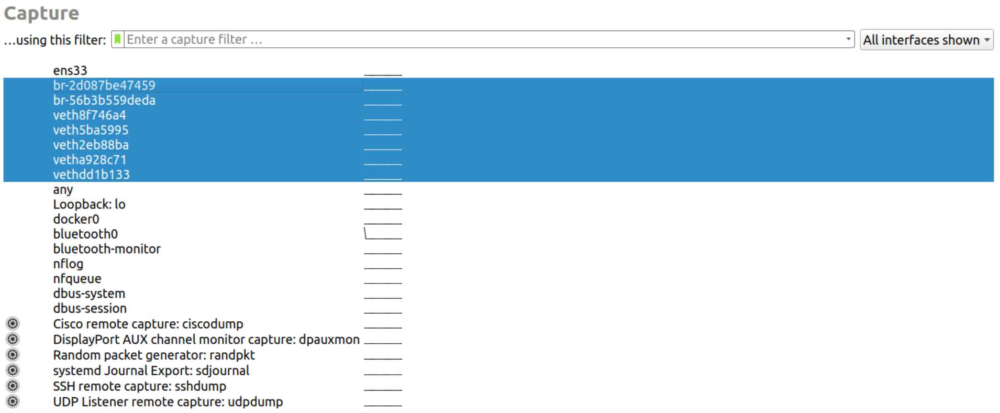
为便于展示, 我们只ping一次. 此次通信全部数据包如下图所示.
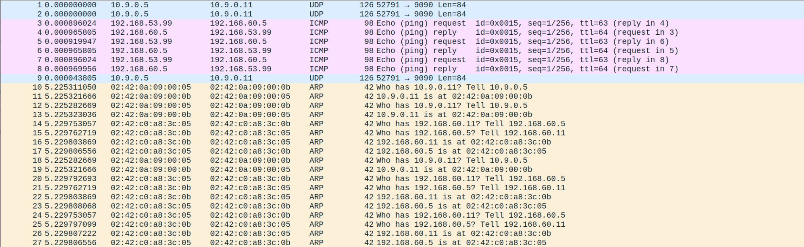
可以看到Host V可以收到信息并且做出了回应, 但是Host U没有收到. 这是因为双向的通信还没有设置, 这是接下来的任务.
实现双向通信
只要在服务器与客户端均实现对套接字和TUN的同时监视即可, 我们选用简单的select(). 此处不展示代码, 因为在前述内容的基础上做到这点是很简单的.
测试结果如下.
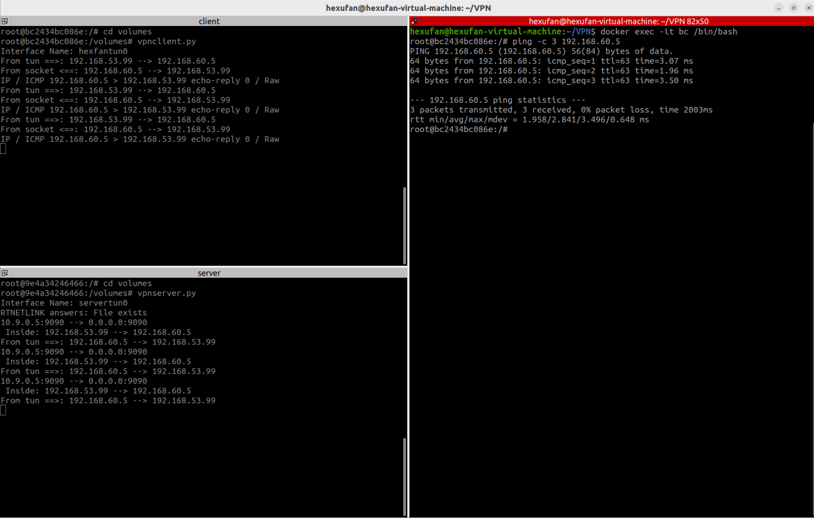
可以看到实现了基本的双向连接. 至此, 我们已经完成了简单的VPN设置.
加密通信
接下来考虑加密. 据 OpenVPN Building and Integrating Virtual Private Networks 第二章, VPN需要满足如下要求.
- Privacy (Confidentiality): The data transferred should only be available to the authorized.
- Reliability (Integrity): The data transferred must not be changed between sender and receiver.
- Availability: The data transferred must be available when needed.
即为机密性和完整性. 第三项业已完成. 现代网络通信主要依靠OpenSSL实现加密. 需要注意的是后续通信均为TCP套接字, 这是因为TLS是建立在TCP的基础之上的. 而之前使用UDP是为了便于从无到有测试通信, 我们做相应替换.
我们首先创建CA为我们的服务器签发证书, 以下操作在 Computer Internet Security A Hands-on Approach 24.3 Certificate Authority中有做讲解.
创建自签名CA
我们在共享文件夹volumes下新建文件夹demoCA.
Ubuntu系统中自带OpenSSL配置文件路径为usr/lib/ssl/openssl.cnf,我们将其拷贝到我们的VPN文件夹中.可以看到其中内容如下.
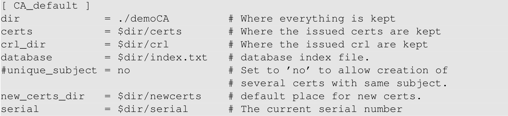
按照要求,在demoCA文件夹下新建文件夹. 其中serial只需输入一个数字即可,我们输入1000.
1 | $ mkdir demoCA |
完成之后我们在此volumes文件夹下执行命令如下, 生成证书.
1 | openssl req -x509 -newkey rsa:4096 -sha256 -days 3650 -keyout ca.key -out ca.crt |
命令行完成后会提示输入信息、设置密码等,填写即可.
为服务器创建证书申请
在volumes文件夹下执行如下命令. 其中vpn.key与vpn.csr是生成文件的名称, subj后是需要提供的信息,均可修改.
1 | openssl req -newkey rsa:2048 -sha256 \ |
通过CA为申请署名
在volumes文件夹下执行如下命令. 请注意,若前述生成文件名做了修改,此处命令行应做相应调整.
1 | openssl ca -config penssl.cnf -policy policy_anything \ |
执行结果如下.
1 | Enter pass phrase for ca.key: |
接下来将vpn.crt 和 vpn.key,移到server-certs文件夹. 将 ca.crt 移到client-certs 文件夹中.
1 | $ openssl x509 -in ca.crt -noout -subject_hash |
得到结果为bcf2bccd,而后执行如下命令.
1 | $ ln -s ca.crt bcf2bccd |
此时VPN文件夹内结构如图所示.
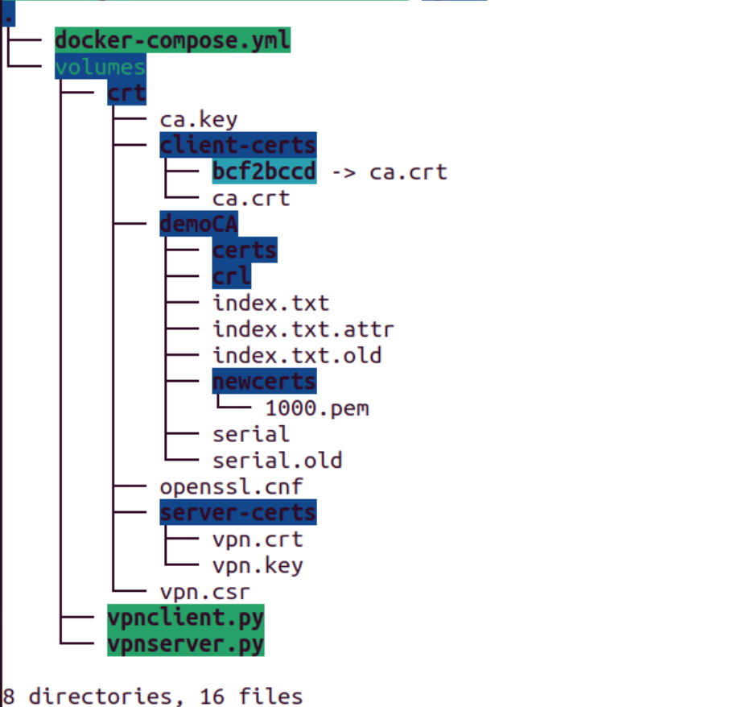
在测试之前, 我们要在客户端容器内将我们之前填写的域名vpn.com与IP地址10.9.0.11做映射.
1 | echo ‘10.9.0.11 vpn.com’ >> /etc/hosts |
分别启动程序, 输入之前设置的密码. 不过我们已经在docker-compose.yml做了等价的处理.
1 | extra_hosts: |
这里会遇到问题.
1 | ssl.SSLError: [SSL: TLSV1_ALERT_UNKNOWN_CA] tlsv1 alert unknown ca (_ssl.c:1123) |
这是说明我们的自签名证书不受系统信任, 但是在程序中我们已经将CA证书加载到TSL环境当中去.
SSL官方文档 针对这一问题的原因给出了一些描述.
Cause:
Client connected using a cert that was signed by a CA unknown to the server
Apache was unable to find the root CA cert that was used for signing the client side cert in its local store of trusted root CA certs
Apache was also unable to find intermediate certs that could be used for creating a chain from the client side cert to one of the root CA certs
我们的通信是单向通信, 只有客户端会在TLS握手时使用ca.crt检验服务器证书. 这就是问题所在, 我们尝试调整代码.
1 | # context.load_verify_locations(capath=cadir) # load the client certificates |
原来我们将所有受信CA证书放置在一个文件夹, 现在我们直接将我们CA的文件传入. 发现可以建立加密通信.
1 | root@89ed775ef74e:/volumes# vpnserver.py |
此处不知为何原文件夹没有成功导入, 可能是因为hash映射之类?
DEBUG记录
以下为此问题的DEBUG记录.
- 将CA证书导入系统受信CA
方法来自SSL官方文档 .
For self signed client side certs, copy the signing CA cert to the directory pointed to by SSLCACertificatePath then run the c_rehash command in that directory.
SSLCACertificatePath 一般是/etc/ssl/certs, 将CA的证书ca.crt导入. 然后在其下执行c_rehash.
1 | root@d08ebee7b0f5:/etc/ssl/certs# c_rehash |
重新运行后错误照旧. 事实上, 这是因为我们的TSL通信根本没有加载系统受信CA列表.
- 调整客户端检验模式
1 | context_srv.verify_mode = ssl.CERT_NONE |
无用, 事实上如是此处问题, 报错如下.
1 | ssl.SSLError: [SSL: PEER_DID_NOT_RETURN_A_CERTIFICATE] peer did not return a certificate (_ssl.c:1131) |
我们在建立服务器TSL环境时选择的模式ssl.PROTOCOL_TLS_CLIENT会默认不对客户端验证证书.
1 | context = ssl.SSLContext(ssl.PROTOCOL_TLS_CLIENT) |
- Python官方SSL库文档中
SSLContext.load_cert_chain(certfile, keyfile=None, password=None)
Load a private key and the corresponding certificate. The certfile string must be the path to a single file in PEM format containing the certificate as well as any number of CA certificates needed to establish the certificate’s authenticity. The keyfile string, if present, must point to a file containing the private key. Otherwise the private key will be taken from certfile as well. See the discussion of Certificates for more information on how the certificate is stored in the certfile.
怀疑为证书、密钥格式非.pem, 更改后依旧.
- 最终解决方案
1 | file: vpnclient.py |
用户身份认证
自然的, 我们希望通过账密的方式指定可以通过VPN通信的人群. 在Linux系统中, /etc/shadow是用于加密存储系统用户的账密数据的文件夹. 由于其在python中有现成的接口, 我们暂时使用shadow. 官方文档 spwd— The shadow password database 供参考.
打开其需要根用户权限, docker镜像中内容展示如下.
1 | root:$6$VEWO.HXf4wqoiV72$qW/tMr.vGz5CWy3aYmwD1gsPWoaH/BrM0EbwqC.tp1TNCxlUzAHHO1NhEqh34..62gUQT7/MGHmBjiyUvFNW> |
我们使用预置的seed用户, 其密码为dees验证程序.
加密通信验证
打开Wireshark捕获数据包, 我们如前所述验证用户身份.
1 | root@010a94c9a7e6:/volumes# vpnserver.py |
登录成功, 至此两终端均陷入阻塞. 查看结果, 可以看到TSL握手的全过程.
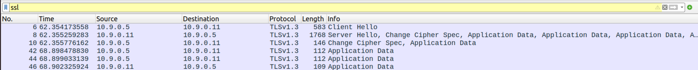
这与如下TLS握手过程对应, 说明我们已经完成了TLS连接的建立.
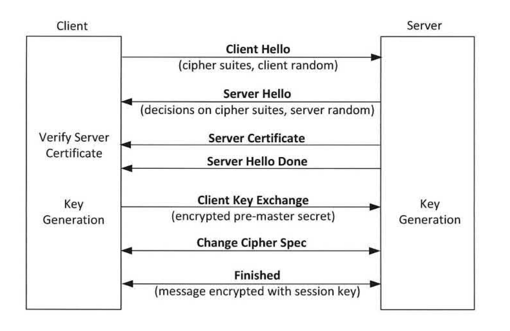
我们尝试验证加密通信内容. 这只需要保持既有的vpnserver.py与vpnclient.py继续运转, 而后另外新建代码文件直接实现HostU与HostV的通信. 此时我们无需考虑网络因素, 直接实现最简单的回声通信, 而后将其在各镜像中运行即可.
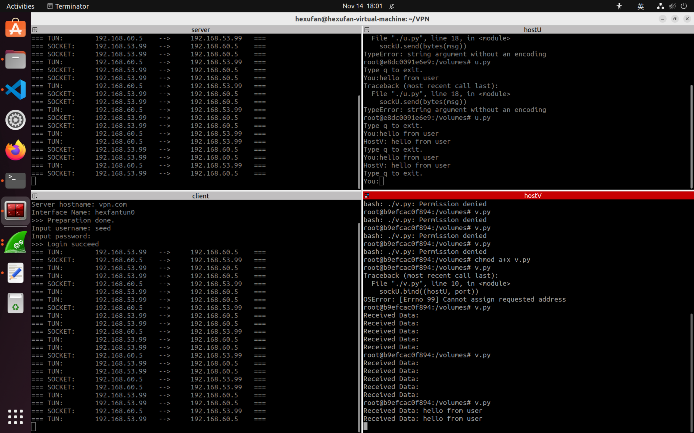
运行结果如上, 可以看到通讯正常. 我们抓取一通信数据包, 可以看到其中数据已被加密.
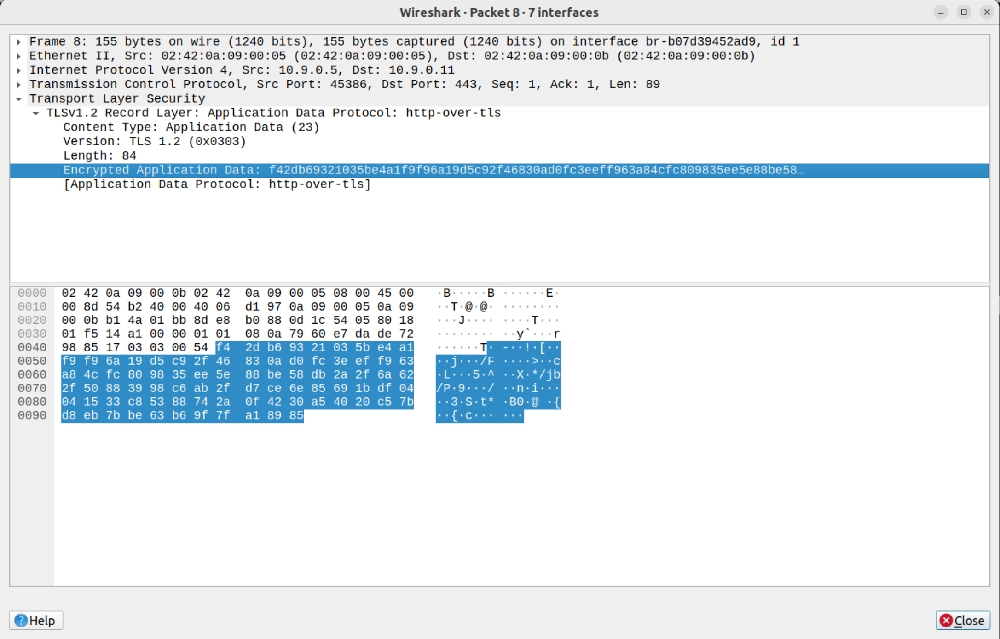
我们可以试着将私钥导入Wireshark直接解码, 具体请参考Wireshark-TLS 中的TLS Decryption.至此, 我们的项目主体部分业已完成. 接下来我们为其构建GUI界面.
GUI界面设置
只需要一个简单的图形界面即可, 用户通过界面应当可以实现如下配置.
- 用户身份验证
- 加密、解密模式设置
- 设置接受信息主机地址
- 编辑、发送信息
Docker容器是通过命令行同我们交互的, 我们需要在docker容器中产生图形界面, 这比较困难. 我们该如何实现呢？
使用内置于python的Tkinder产生GUI, 容器中的图形界面可以转发到主机显示屏上.
在容器内建立webserver, 发布网页. 在虚拟机中访问网页实现交互.
使用方法1需要将docker网络模式改为host, 为了模拟网络, 我们需要保持网桥br模式. 使用方法2需要重新新建webserver, 建立客户端与服务器的通信交互, 亿点点工作量. 用docker做好麻烦😢😢...
为避免这些困难, 我们转变思路, 直接通过GUI控制Docker网络的构建过程. 我们使用PyQt5实现GUI, 交互逻辑如下.
- 运行程序
- 用户登录界面
- 通信设置界面
- 是否打开加密模式
- 设置通话对象
- 通话界面-实现聊天框
GUI编程与代码重构
首先安装PyQT5.
1 | hexufan@hexufan-virtual-machine:~$ pip install PyQt5 |
其中, 我们想实现在python代码中调用外部命令操纵容器, 代码如下.
1 | docker exec <container_id_or_name> <path_to_script> |
我们如前述将本由我们手动输入的命令行转变为python自动运行, 此处与子进程交互, 我们使用subprocess中的popen. 此函数的详细说明请见docs.python.org .
注意事项
请注意在服务器与客户端vpn程序运行时稍稍推迟时间, 否则会出现混乱, 如下图所示.
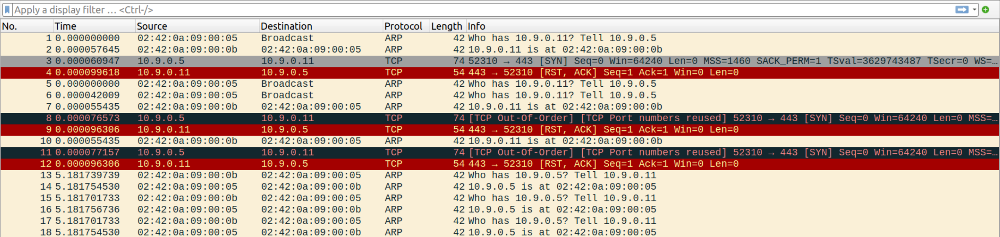
使用
sleep是个不错的选择.1
2import time
time.sleep(0.5)我们于Python脚本中运行的某些系统命令相当费事, 因此我们使用
wait(). 当我们使用shell参数时就可直接使用字符串形式的命令, 免去麻烦. 但这样做会导致进程不等待子进程结束就进行, 请见stackoverflow.com .Sadly when running your subprocess using
shell=True,wait() will only wait for theshsubprocess to finish and not for the commandcmd.I will suggest if it possible to don't use the
shell=True, if not possible you can create a process group like in this answer and use os.waitpid to wait for the process group not just the shell process.Hope this was helpful :)
某些时候我们的命令必须置于shell中执行, 如下所示. 🤔🤔🤔
1
docker stop $(docker ps -aq) && docker rm $(docker ps -aq)
效果演示
打开代码文件夹_VPNCode, 内容如下所示.
├── docker-compose.yml └── volumes ├── crt │ ├── ca.key │ ├── client-certs │ │ ├── 11719d94 -> ca.crt │ │ └── ca.crt │ ├── demoCA │ │ ├── certs │ │ ├── crl │ │ ├── index.txt │ │ ├── index.txt.attr │ │ ├── index.txt.old │ │ ├── newcerts │ │ │ └── 1000.pem │ │ ├── serial │ │ └── serial.old │ ├── indext.txt │ ├── my_openssl.cnf │ ├── serial │ ├── server-certs │ │ ├── vpn.key │ │ └── vpn.pem │ ├── vpn.crt │ ├── vpn.csr │ └── vpn.key ├── main.py ├── os_operation.py ├── page_config.py ├── page_dialog.py ├── page_login.py ├── pycache │ ├── configpage.cpython-310.pyc │ ├── login.cpython-310.pyc │ ├── os_operation.cpython-310.pyc │ ├── page_config.cpython-310.pyc │ ├── page_dialog.cpython-310.pyc │ └── page_login.cpython-310.pyc ├── unencrypted_client.py ├── unencrypted_server.py ├── u.py ├── vpnclient.py ├── vpnserver.py └── v.py
9 directories, 35 files
我们运行main.py.
登录界面
界面如下图所示.
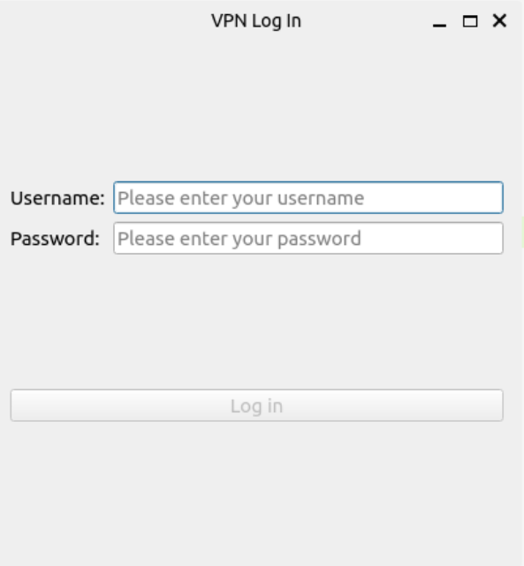
设置输入账密后才可点击
Log in.完成输入后按下
ENTER键即可登录.消息页面
错误账密消息页面
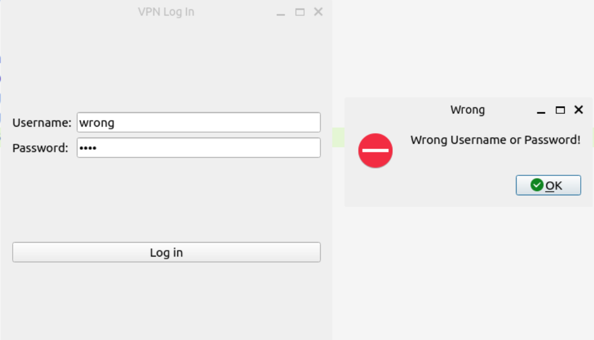
正确账密消息页面
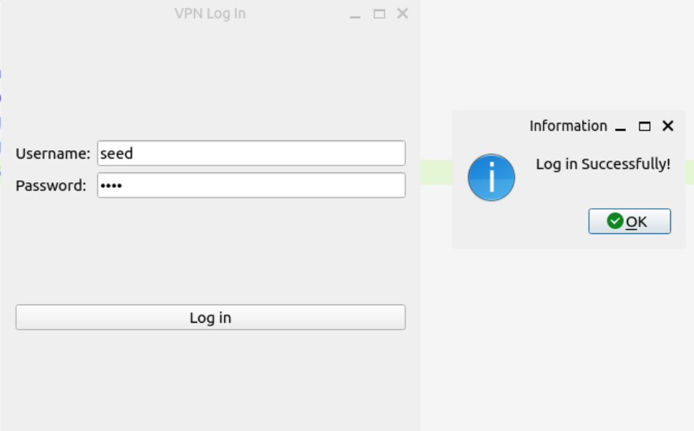
VPN设置界面
如图所示.
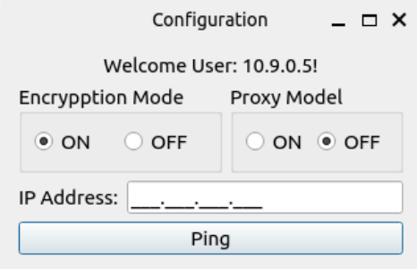
- 是否打开加密通信模式
- 是否打开代理模式
- 测试网络通信-输入网址
ping测试可达性. - 打开代理后无法调整加密模式.
未开启VPN时连通性测试
我们输入Host V 192.168.60.5, 而后点击ping.
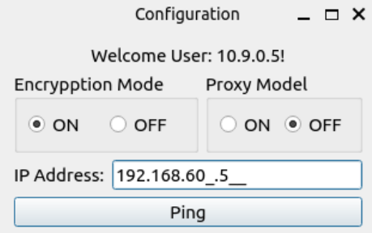
返回结果如图所示, 无法联通.
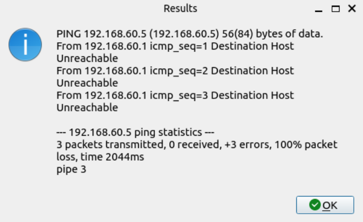
加密模式通信测试
我们打开代理模式, 请注意打开时部署网络需要一定的时间.
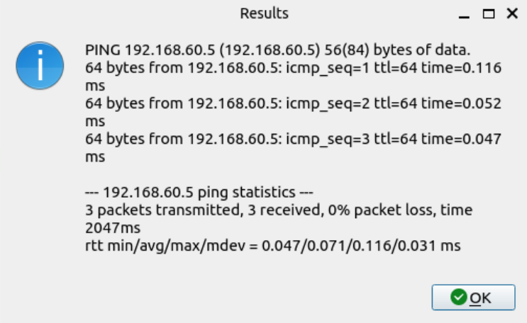
可以连通. 预先打开Wireshark抓包, 可以看到TLS加密数据包.
关闭VPN代理模式
请注意, 此过程亦耗时较长.
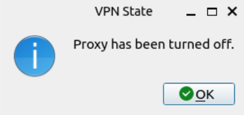
等待片刻后, 弹窗提示容器均已移除.
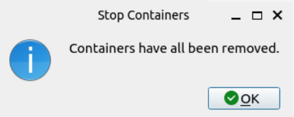
未加密模式通信测试
如前所述, 我们关闭加密模式, 再打开代理即可.
弹窗提示未加密VPN代理依然打开.
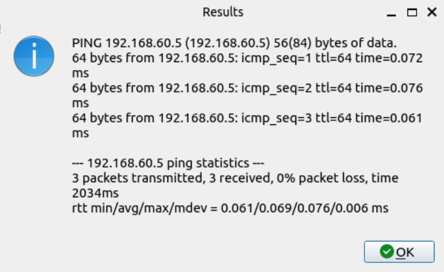
同样测试, 可以连通.
关闭VPN.
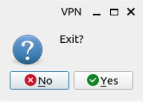
会有消息窗口提示containers已经全部删除.
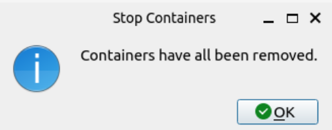
历时约三周, 其实最后有很多地方都是比较糊弄地过去了. 但是
完结撒花★,°:.☆(￣▽￣)/$:.°★ .